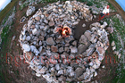
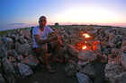
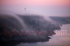
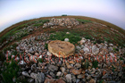
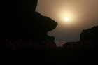
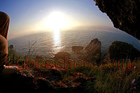
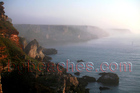

Kamen Bryag
A magical place with awesome rocks, fire and water. Its name 'Kamen bryag' means rocky shore. In fact there is almost no sand - just a little between the rocks. This place attracts with extreme climbing paths above the water. It is also a popular place for free primitive camping.
Panoramiv view of Kamen bryag's fire- 
Kamen bryag's fire from above
Kamen Bryag's rocky shore
Another view from above Kamen bryag's shore
Tents
Key point- 
At the fire
The road to the village
The fire at night
Clear sky above Kamen bryag- 
Steams over Kamen bryag
The fire again- 
Just rocks
Flower on the rocks
Beatiful Sunrise over Kamen bryag
Sunrise
Beauty on the rocks
The shore from below
The bathing place
Kamen bryag's strata- 
Sunrise between the rocks
Under the rocks at Kamen bryag
Another photo from under the rocks
Sunrise
More of the strata
The shore in its whole beauty at Sunrise- 
The sunrise through a spider web
Spider web
More of the shore- 
The shore in mist